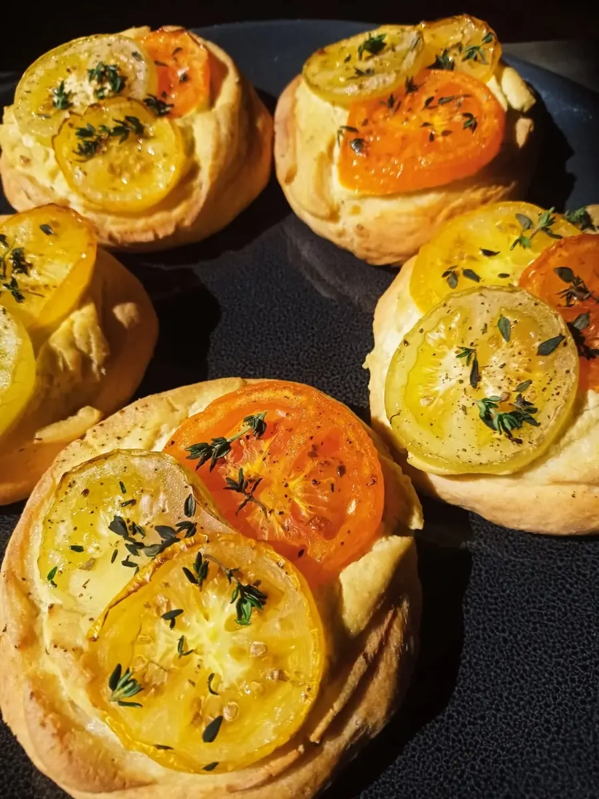
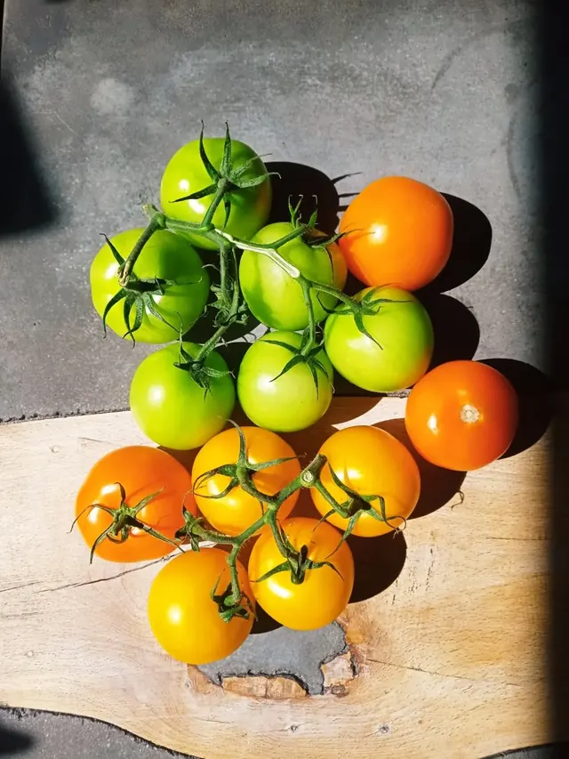
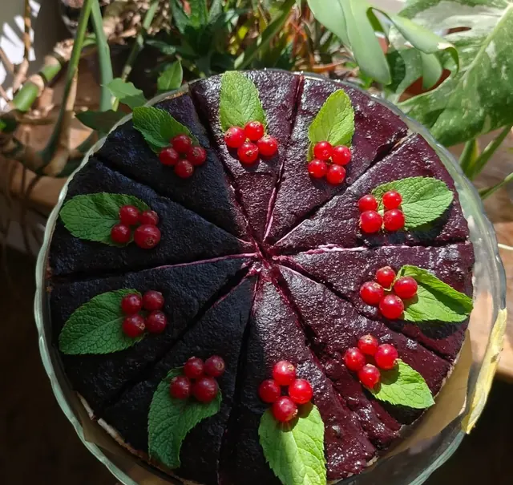
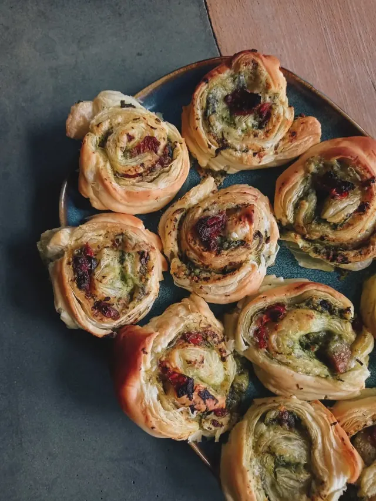

Vegánska reštaurácia · Trenčín
Vegánske obedy na poschodí nad Mierovým námestím
„To čo si práve dnes zaslúžiš...Roots“ich popis na Wolte
- 4,7Google · 131 hodnotení
- 96 %odporúča · FB 51
- Po–Piobedy od 11:00



Stála ponuka
Tempeh burrito, kimchi smažená ryža a ľadové black sesame latte
Hlavné jedlá
- Tempeh burrito12,50 €250 g · pšeničná tortilla, ryža, fazuľa, restovaný tempeh, rajčina, cibuľa, avokádo, šalát, vegan kyslá smotana…
- Kimchi smažená ryža12,30 €300 g · ryža, domáce kimchi, edamame, mrkva, cuketa, jarná cibuľka, restovaný tempeh · alergény 1, 6
- Loaded nugget fries12,30 €250 g · hranolky, nekuracie kúsky, sriracha mayo, domáca nakladaná cibuľka, kyslá uhorka, šalát…
Nápoje
- Ľadové black sesame latte4,30 €0,4 l
- Domáca limonáda2,90 / 3,90 €0,3 l / 0,5 l · podľa aktuálnej ponuky
- Domáci ľadový čaj3,90 €0,5 l

Čo o nich vieme
Poschodie s kozubom priamo na námestí
- KozubReštaurácia je na poschodí domu na Mierovom námestí 11 a má kozub — tak ju popisuje Google.
- Aj s deťmiPodľa Google majú k dispozícii vysoké stoličky pre deti.
- So sebouNa Facebooku uvádzajú vyzdvihnutie v prevádzke aj pred ňou; ponuka je aj na Wolte.
Kontakt
Mierové námestie 11, poschodie
Otváracie hodiny · overiť
| Pondelok | 11:00–15:30 |
| Utorok | 11:00–15:30 |
| Streda | 11:00–15:30 |
| Štvrtok | 11:00–15:30 |
| Piatok | 11:00–15:30 |
| Sobota | zatvorené |
| Nedeľa | zatvorené |
Podľa Google. Wolt uvádza Po–Pi 11:00–15:15 — overiť.